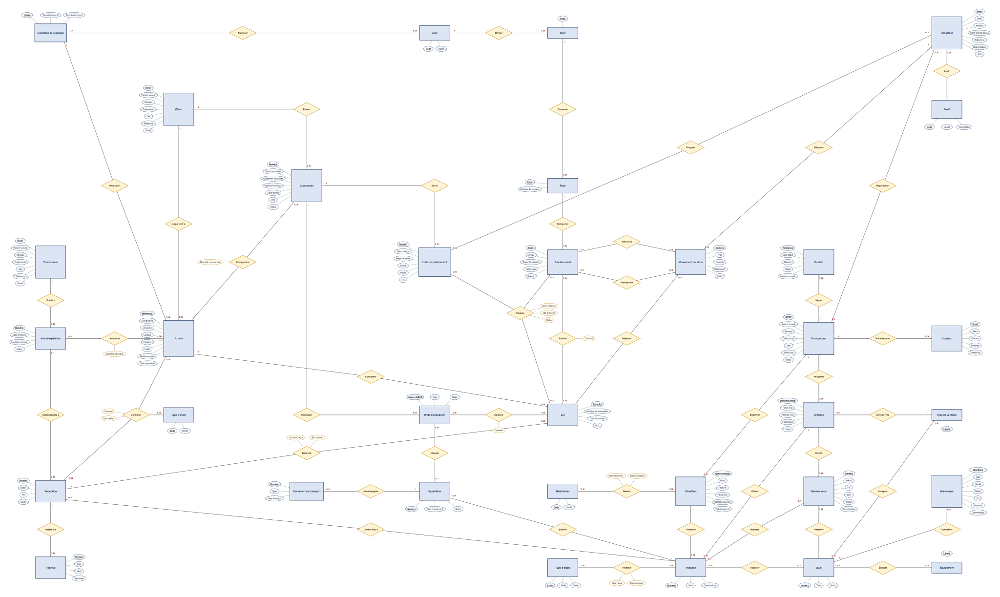

UTBM · BD70 · Semestre A26
Une base MariaDB qui porte les règles métier,
une application web PHP pour l’exploiter
Jad ABDUL RAZEK · Matthias LUTZ · Abdelmalik TELITEL
Enseignant : Alexandre LOMBARD
Diapo 1 — [Orateur 1] Bonjour. Nous allons vous présenter notre système de gestion d’un entrepôt logistique : 5 minutes de présentation, puis 5 minutes de démonstration. Fil rouge : nous avons placé les règles métier dans la base de données elle-même, et le site web ne fait que l’exploiter. (≈ 15 s)
Le sujet
PHP 8 + PDO · MariaDB 10.4 · 5 profils · ~120 000 lignes de données factices
Diapo 2 — [Orateur 1] Le sujet : gérer les opérations d’un entrepôt — camions, quais, réception, stockage, expédition — avec une traçabilité complète et des indicateurs. Le site web n’était exigé que pour cinq modules (à gauche). Nous avons couvert tout le sujet, y compris la préparation et l’expédition des commandes, pour que la chaîne soit complète du camion entrant au camion sortant. Technologies : PHP 8 avec PDO, MariaDB. (≈ 35 s)
Démarche
01
Une phrase du sujet = un cas. 5 acteurs, include / extend
02
33 entités, 46 associations dont 12 N:N et 2 ternaires
03
45 tables en 3NF, clés métier en UNIQUE, contraintes CHECK
04
Déclencheurs, procédures, vues, puis une page PHP par écran
Vérification dans les deux sens : chaque cas s’appuie sur le modèle, et chaque entité sert au moins un cas.
Livrables : uml/use_case_entrepot.svg · uml/diagramme_entite_association.svg · uml/schema_relationnel.svg
Diapo 3 — [Orateur 2] Notre démarche a suivi le cours : d’abord les cas d’utilisation, en relisant le sujet phrase par phrase, puis le modèle entité-association — 33 entités et 46 associations — puis sa traduction en 45 tables en troisième forme normale. Les N:N deviennent des tables de jointure, les identifiants métier (SIRET, immatriculation) sont déclarés UNIQUE, et chaque table a une clé artificielle id. Enfin la base, avec son automatisation, et le site. Nous avons vérifié la cohérence dans les deux sens : aucun élément du modèle ne sort du périmètre. (≈ 40 s)
Modèle conceptuel

Le prévu et le réel, liés en 0..1 / 0..1 : retards et arrivées sans RDV
Type d’étape + N:N Franchir, pas 7 colonnes de dates
DLC, traçabilité et règle FEFO se font au lot
Constater (réception, article, type d’écart) et Prélever (liste, lot, emplacement)
Diapo 4 — [Orateur 2] Quelques choix de modélisation. Le passage, visite réelle d’un camion, est distinct du rendez-vous, visite prévue : c’est ce qui permet de détecter les retards et d’accepter un camion sans rendez-vous. Les étapes du passage sont une entité Type d’étape reliée par une N:N qui porte l’horodatage, plutôt que sept colonnes de dates vides. Le lot est séparé de l’article, car la DLC et la traçabilité sont propres au lot. Enfin deux associations restent ternaires, car aucun couple ne détermine le troisième : un même article peut être à la fois manquant et endommagé dans une réception. (≈ 45 s)
Automatisation dans la base
20
déclencheurs
6
procédures
4
fonctions
5
vues
Chevauchement de RDV, ordre des étapes, capacité des emplacements et des camions, produit / zone
Stock recalculé à chaque mouvement, statut des quais, écarts calculés à la clôture
mouvement_stock immuable : une erreur se corrige par un ajustement
Diapo 5 — [Orateur 3] Notre choix le plus structurant : les règles métier sont dans la base, pas seulement dans le PHP. 20 déclencheurs, 6 procédures, 4 fonctions et 5 vues. Par exemple, un rendez-vous qui chevauche un autre sur le même quai est refusé par un déclencheur, même si on insère directement en SQL. Le stock n’est jamais saisi : il est recalculé à chaque mouvement, et la table des mouvements est immuable — on ne modifie pas, on ajuste. Preuve : nos 120 000 lignes de données factices ont été générées en passant par ces déclencheurs, elles respectent donc toutes les règles. (≈ 45 s)
Sécurité et confidentialité
| Risque | Parade dans le projet |
|---|---|
| Vol des mots de passe | Hachage bcrypt (password_hash), jamais en clair |
| Injection SQL | Requêtes préparées PDO pour toute valeur saisie |
| XSS | Toute donnée affichée échappée par e() |
| CSRF | Jeton vérifié sur chaque formulaire |
| Accès non autorisé | Profil contrôlé côté serveur sur chaque page |
| Compte du site compromis | Moindre privilège : entrepot_app n’écrit ni dans stock ni dans la structure |
Limites connues : pas de HTTPS imposé, pas de blocage après plusieurs échecs de connexion
Diapo 6 — [Orateur 3] Côté sécurité, chaque risque classique a sa parade : mots de passe hachés en bcrypt, requêtes préparées contre l’injection SQL, échappement systématique contre le XSS, jeton CSRF sur chaque formulaire, et contrôle du profil côté serveur sur chaque page — un transporteur ne voit que ses rendez-vous. Le site ne se connecte pas en root mais avec un compte limité, qui ne peut pas écrire dans la table stock. Nous connaissons aussi nos limites : pas de HTTPS imposé ni de blocage des comptes. (≈ 35 s)
Performances
×15
0,08 ms au lieu de 1,21 ms, index ix_rdv_quai_creneau
×20
0,08 ms au lieu de 1,74 ms, index ix_mvt_lot_date
32 ms
Proposition d’emplacements : acceptable pour un écran de rangement
16 requêtes principales mesurées par sql/performances.php : médiane de 20 exécutions, plan lu avec EXPLAIN.
Mesures du 04/11/2026, MariaDB 10.4, ~120 000 lignes (rapport d’analyse des performances)
Diapo 7 — [Orateur 1] Pour les performances, un script mesure les 16 requêtes principales : chaque requête est exécutée 20 fois et on garde la médiane, avec et sans index, et on lit le plan avec EXPLAIN. Le contrôle de chevauchement, exécuté à chaque prise de rendez-vous, est 15 fois plus rapide grâce à un index composite sur quai et créneau ; l’historique d’un lot 20 fois plus rapide. La requête la plus lente, la proposition d’emplacements, reste à 32 ms. (≈ 35 s)
Démonstration · 5 minutes
1
Agent d’accueil
Prise de RDV sur le planning, chevauchement refusé par la base
2
Agent d’accueil
Arrivée du camion, étapes horodatées en un clic, appel à quai
3
Magasinier
Réception par lots, clôture et écarts calculés, rangement proposé
4
Magasinier
Recherche de stock multicritère, traçabilité complète d’un lot
5
Responsable
Indicateurs sur une période, graphiques et rapport imprimable
Diapo 8 — [Orateur 1 → démo] Place à la démonstration. Nous suivons un camion de bout en bout en changeant de profil, pour montrer aussi les droits distincts. Préparer avant la soutenance : base installée, site lancé, onglets déjà connectés si possible, un rendez-vous du jour prêt à être honoré, un avis d’expédition en attente. Mot de passe commun des comptes de démonstration : BD70@26. (≈ 10 s, puis 5 min de démo)